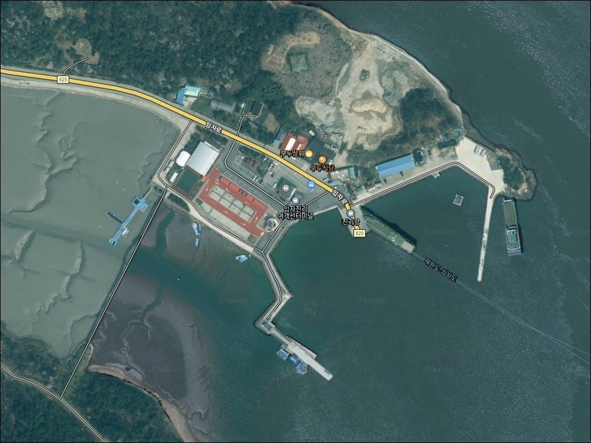
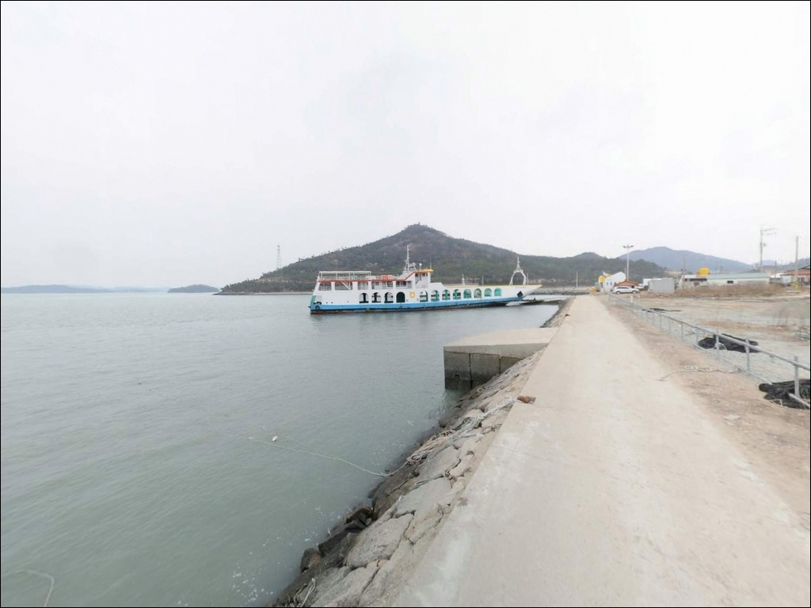
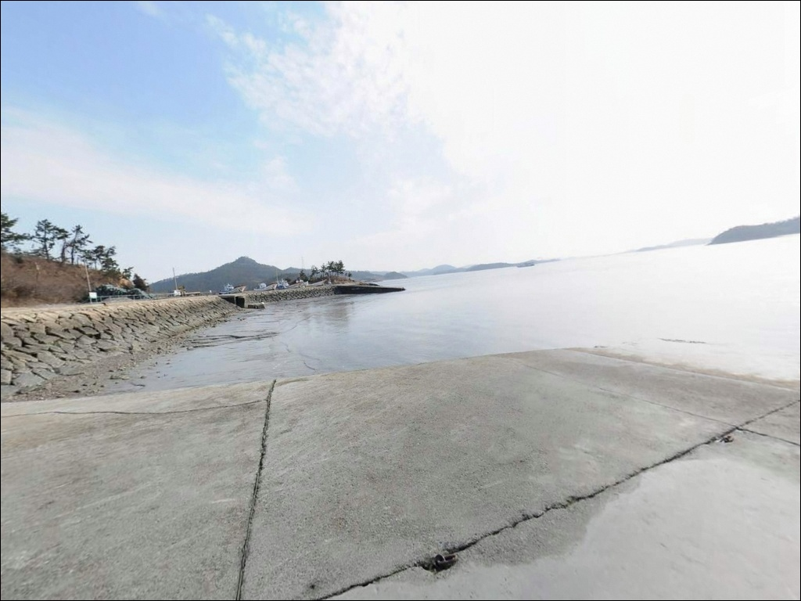
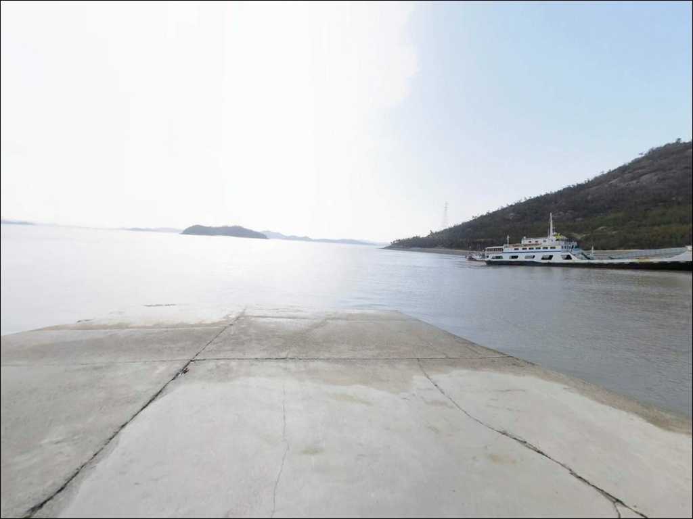
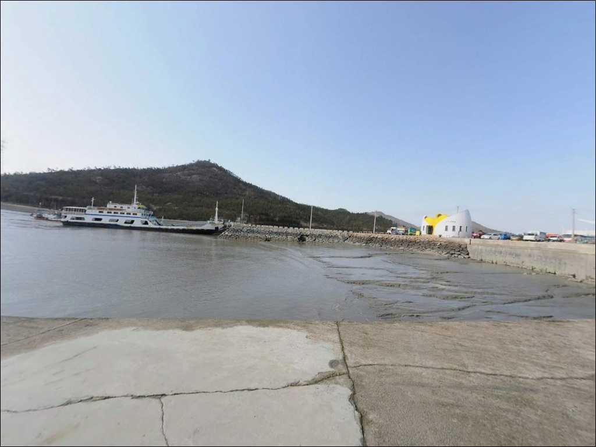
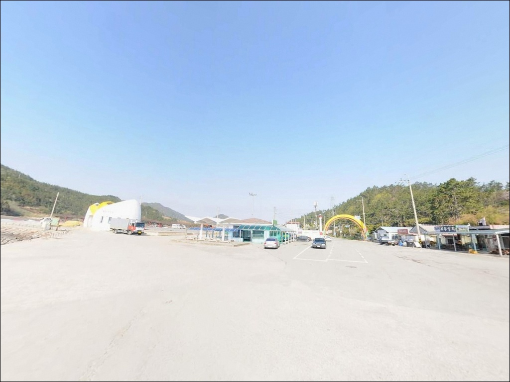
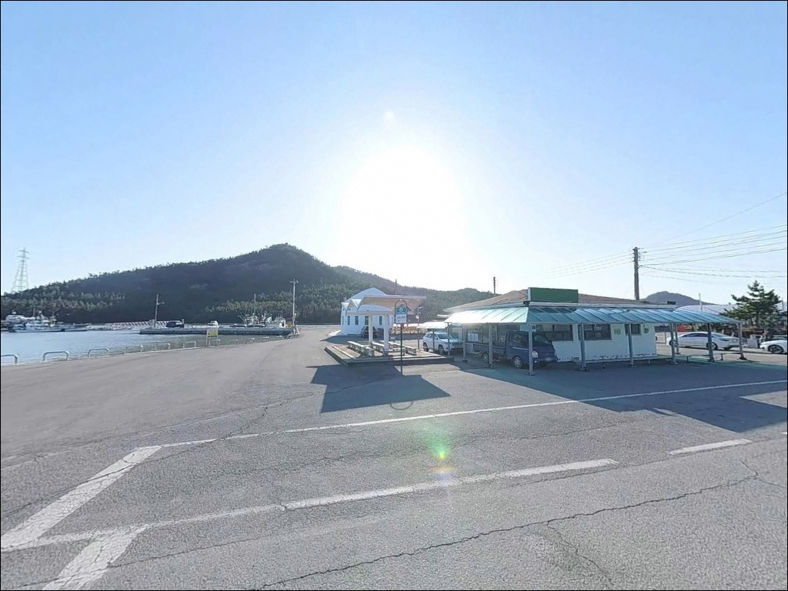
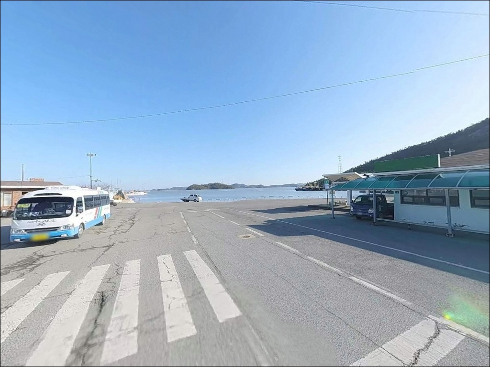
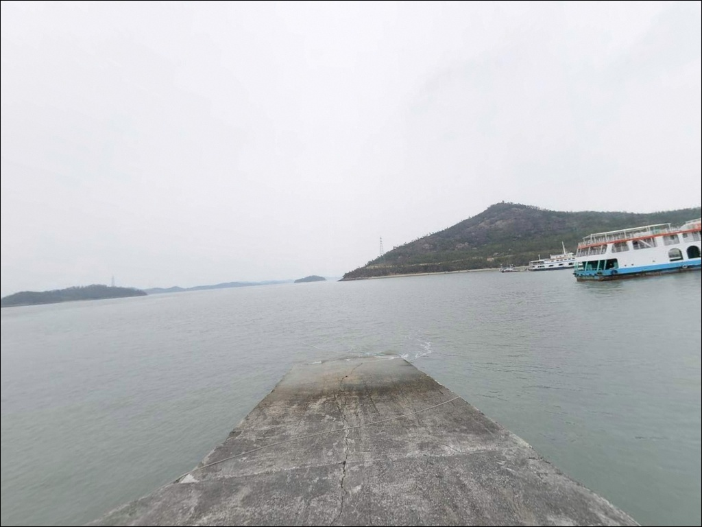

진리항, 임자도 전남 신안군 고요한 수면을 바라보며 차박, 낚시를 즐기기 좋은 해안


포인트 안내
진리항
전남 신안군 임자면 진리 309-6
물때 확인 없이 진리항에 도착하면
수심이 0.3m 수준까지 낮아진 뻘 바닥 앞에서
채비를 던질 자리를 찾지 못하는 상황이 생깁니다.
임자도 동쪽 내해 수로에 면한 이 선착장은
간조 타이밍에는 포인트 범위 자체가 급격히 줄어드는
구조입니다.
임자대교 개통 이후 차량 진입이 수월해진 포인트이지만,
서해 특성상 조석 간만의 차가 크고
내해 수로를 타고 흐르는 조류 변화가 조과를 결정합니다.
이 글은 진리항의 진입 환경과 낚시 여건,
물때 기반 스타일 판단,
임자도 내 대안 포인트 정보에 집중합니다.
조황 단정과 어종 보장은 이 글의 범위에 포함되지 않습니다.

1. 임자대교 이후 달라진 진입 환경과 포인트 접근성
2021년 임자대교 개통으로
이전에는 여객선을 타야만 닿을 수 있었던 임자도에
차량으로 직접 진입할 수 있게 됐습니다.
지도읍 방면에서 임자대교를 건너
섬 내부 도로를 따라 동쪽으로 이동하면
임자면 소재지 인근에서 진리항에 닿습니다.
임자도 동쪽 해안은 평탄한 간척지와 염전이 혼재하는 지형입니다.
선착장까지 이어지는 진입로에
급경사나 비포장 구간이 없는 편이며,
임자면 소재지 중심 기능이 진리 일대에 있어
생활도로 수준의 포장로가 선착장 인근까지 이어집니다.
주차는 선착장 인접 공터를 활용하는 방식이 기본입니다.
구 여객선 터미널 기능이 있었던 항구 특성상
차량 회차 공간은 어느 정도 확보되어 있습니다.
다만 어선 이동 동선과 여객선 승하선 구역은
피해서 자리를 잡아야 합니다.
대형 SUV나 캠핑 차량은
위성지도로 주차 공간을 사전에 확인하는 편이 좋습니다.

2. 차박 환경과 야간 체류 여건
진리항은 임자면 소재지와 가까운 생활 어항입니다.
면사무소와 마을 상가, 여객선 시설이 항 주변에 자리하고 있어
완전한 외딴 분위기와는 거리가 있습니다.
야간에도 주민 생활권과 인접한 위치 특성상
조용한 단독 차박보다는 낚시 중심 단기 체류에
더 어울리는 포인트입니다.
가로등은 면 소재지 인근 특성상 어느 정도 설치되어 있습니다.
선착장 끝단이나 방파제 구간의 야간 조명은
현장에서 직접 확인이 필요합니다.
야간 출조 시에는 개인 헤드랜턴을 반드시 챙겨야 하며,
뻘 바닥과 선착장 가장자리는 이슬과 물기로 미끄럽습니다.
차박을 메인으로 고려한다면
진리항보다는 임자도 서쪽 대광해수욕장 방향이
개방적인 공간과 주차 여건 측면에서 나은 선택입니다.
진리항은 낚시 후 잠시 머무는 형태로 활용하고,
숙영 공간은 대광해수욕장 쪽에서
별도로 확보하는 방식이 현실적입니다.


3. 주변 편의시설 및 인프라 현황
진리항 도보권에 전복톳밥 전문점
나들목식당(신안군 임자면 진리길 2)이 있습니다.
단체 예약이 가능한 곳으로
식당 앞 주차 공간도 갖추고 있어
출조 전후 식사 동선을 잡기 수월한 편입니다.
임자면 소재지가 진리 일대에 위치해
면사무소 인근으로 소형 마트 형태 점포가 있으며,
임자농협하나로마트도 임자면 소재지 내에
운영 중인 것으로 알려져 있습니다.
다만 섬 지역 특성상 프랜차이즈 편의점이나
24시간 운영 매장은 기대하기 어렵습니다.
식수, 얼음, 낚시 소품은 임자대교 진입 전
육지에서 미리 준비하는 것이 기본입니다.
응급 상황 발생 시 신안군 본섬까지 거리가 있는 만큼
연료와 비상약품도 여유 있게 챙겨야 합니다.

4. 간조 타이밍에 진입하면 낚시가 불가능해지는 이유
진리항 방문 전에 가장 먼저 확인할 것은 물때입니다.
바다타임 데이터 기준 이 포인트의 수심은 0.3~4.2m 범위로,
간조 시에는 뻘 바닥이 넓게 드러나
채비를 던져도 바닥에 닿는 구간이 대부분이 됩니다.
초들물 이후 조류가 살아나는 물때가
진리항의 적정 입장 타이밍입니다.
임자도 일대 해역은 창조류 3.1kn, 낙조류 2.8kn 수준의
빠른 조류가 형성되는 서해권입니다.
내해 수로를 타고 흘러드는 조류가 어종 활성도를 높이는 구조라,
바다타임에서 진리 일대 물때를 확인하고
들물 초반을 기점으로 입장 시각을 맞추는 것이 기본 전략입니다.
당일 기상은 출발 전 기상청 해상예보로
파고와 풍속을 반드시 점검해야 합니다.
섬 지역 특성상 기상 변화가 빠르고,
뻘 바닥 선착장 가장자리는 이슬과 조류로 미끄럽습니다.
구명조끼와 미끄럼 방지 신발은
이 포인트에서 기본 안전 준비입니다.

5. 지형 기반 낚시 여건 분석
진리항이 자리한 임자도 동쪽은
지도읍 방향 내해 수로에 면한 구조입니다.
서쪽 대광해수욕장 쪽과는 파도·바람 환경이 완전히 달라
내만형 배치 특성상 수면이 비교적 안정적이고,
외해 직접 노출이 없어
바람이 강한 날에도 낚시 가능 구간이 유지되는 편입니다.
바닥 저질은 전 구간 뻘(펄) 바닥입니다.
이 저질 특성이 이 포인트의 낚시 방식을 사실상 결정합니다.
방파제 끝단으로 갈수록 수심이 깊어지는 경향이 있으며,
내해 수로 방향은 조류를 직접 받는 핵심 자리입니다.
조류가 흐르는 타이밍에 어종 활성도가 높아지는
전형적인 내해 수로형 포인트 구조입니다.
선착장에는 여객선 승하선 구역과
어선 접안 구간이 함께 있습니다.
이 구역을 피해 방파제 끝단 방향으로
자리를 잡는 것이 낚시 여건과 현장 매너 모두에서
우선되는 판단입니다.
뻘 바닥 선착장 가장자리는
간조 전후에 발판이 불안정해지므로
야간에는 헤드랜턴으로 발판을 반드시 확인해야 합니다.

6. 뻘 바닥과 내해 수로에 맞는 낚시 스타일
이 포인트에서 가장 잘 맞는 낚시는 원투낚시입니다.
뻘 바닥 저질과 얕은 수심 특성상
참갯지렁이나 청갯지렁이 미끼를 달아
방파제 끝단 또는 수로 방향으로 멀리 보내는 패턴이 유효합니다.
야간 원투에서 붕장어와 숭어 계열을
기대해볼 수 있는 지형 조건입니다.
릴찌낚시와 민장대도 이 포인트 구조에 어울립니다.
물양장 발밑 1~2m 구간에서
숭어와 감성돔을 대상으로 릴찌 패턴을 운용할 수 있습니다.
중날물 이후 수심이 충분히 확보된 타이밍이
릴찌낚시 적정 구간으로,
간조 전후에는 포인트 범위가 좁아지므로
물때와 자리 선정을 함께 판단해야 합니다.
루어낚시는 수심이 받쳐주는 물때에
조건부로 시도해볼 수 있습니다.
농어와 광어를 대상으로 하는 루어 패턴은
만조 전후 수심이 확보된 타이밍에 집중하는 편이 유리합니다.
뻘 바닥 특성상 지그헤드 리그보다
바닥 끌림이 적은 프리리그나 고부력 채비가
밑걸림을 줄이는 데 효과적입니다.
가을 시즌에는 주꾸미와 갑오징어 에깅도 시도해볼 만하며,
임자도 인근 해역은 여름~가을에
민어와 백조기가 합류하며 어종 폭이 가장 넓어지는
패턴을 보이는 해역입니다.
출조 전 최신 조황은 반드시 검색해 보시기 바랍니다.

7. 대안 포인트와 플랜 B 동선
진리항 조황이 기대에 미치지 못하거나
물때 타이밍이 맞지 않을 때는
전장포항이 첫 번째 대안입니다.
임자도 북단에 위치한 섬 내 대표 어항으로
진리항에서 약 6~7km 거리에 있으며,
방파제 구조를 갖춰 낚시 방식의 선택 폭이 넓습니다.
낚시 커뮤니티에서 조황 정보가
진리항보다 훨씬 활발하게 공유되는 곳입니다.
임자도 서쪽의 하우리항도 대안으로 검토할 수 있습니다.
외해 방향 접근이 가능한 위치로
진리항과는 방향이 달라
바람 방향에 따라 유불리가 바뀌는 보완 관계의 포인트입니다.
동풍이 강한 날에는 서쪽 하우리항 방향이
바람을 등지는 구조로 유리해집니다.
차박 베이스캠프를 따로 잡는다면
임자도 서쪽 대광해수욕장 방향이 현실적입니다.
넓은 공영 주차장과 화장실 등 편의시설이
진리항보다 체계적으로 갖춰져 있으며,
이곳을 기점으로 전장포항과 진리항을
순서대로 탐색하는 동선이 임자도 안에서
가장 효율적인 이동 경로입니다.

물때를 맞추면
진리항은 생각보다 넓은 포인트입니다
원투낚시나 릴찌낚시를 주로 즐기는 낚시인에게
진리항의 뻘 바닥 지형과 내해 수로 조류는
잘 맞는 구조입니다.
임자대교 개통으로 진입이 수월해진 만큼
당일 출조 계획도 충분히 가능하고,
전장포항과 하우리항을 함께 묶으면
하루 동안 임자도 권역 낚시를 넉넉하게 소화할 수 있습니다.
반면 물때 판단 없이 간조 타이밍에 도착하거나
개방형 외해 포인트를 기대하고 찾아가면
내해 수로형 선착장의 조용한 분위기가
기대와 다르게 느껴질 수 있습니다.
물때 확인, 원투 채비 준비, 사전 조황 검색,
이 세 가지가 갖춰지면
진리항은 부담 없이 찾을 수 있는
서해 생활낚시 포인트가 됩니다.
차박을 함께 계획한다면
대광해수욕장을 베이스로 삼고
진리항 낚시를 이동 코스에 얹는 방식이
임자도에서 낚시와 차박을 동시에 즐기는
가장 현실적인 동선입니다.